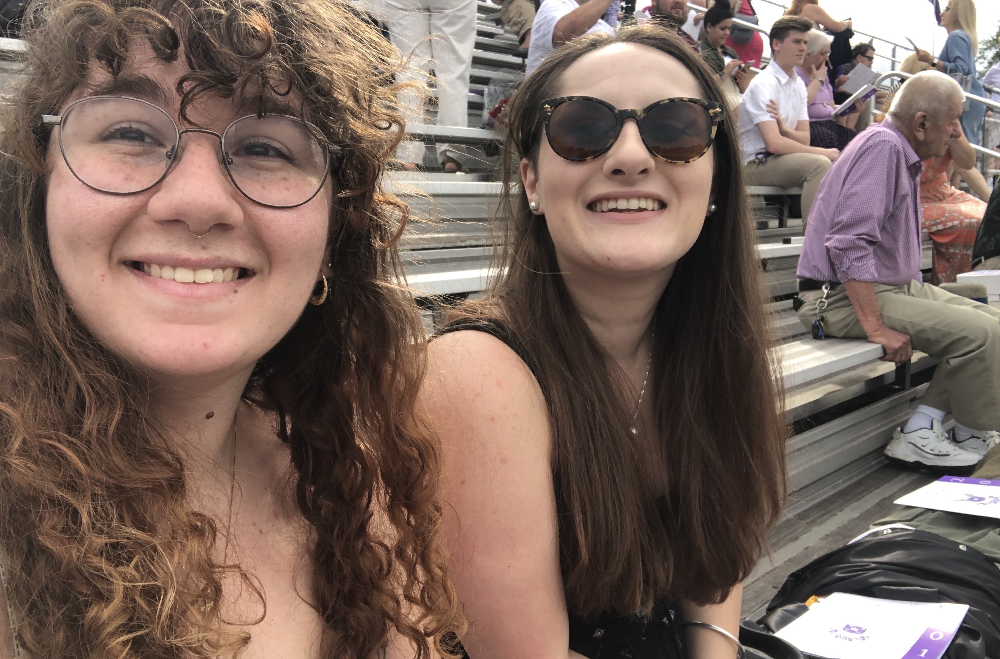

STATEMENT
My work is my life. As such, I take great responsibility and care when it comes to making my photographs. As a photographer, it is my duty to my sources to present them aesthetically and for view; but as a journalist, it is my duty to tell their stories truthfully and wholly. I am endlessly yearning to blur that line, the line between photographer and journalist, and to challenge my own perceptions of what it means to be a storyteller. I work mainly in digital photography, though I do have experience in 35mm film, and recently have begun to branch out into other mediums like video, collagework, and data visualization. The projects I work on, while relating in part to my own identities, are free of my influence. While I do pick my stories based off of personal relevance and interest, it would be unethical of me to tmaper with these stories in any way. As such, the only influence of mine in my work would be a shared expereince, or mutual understanding between me and my sources. I do not claim to be an expert on all things human, but as a student of life, I find myself begging the ether bid me guidance through the trying time of being alive. After recently turning twenty, I find myself balking at todays apathy, lost in the whirlwind of corrosive political environment and a general feeling of anxiety. I am constantly grooming the sand for some semblance of sense, some intricate working of human grace. My work, writings, and photographs are what I hope to be a reflection of that.
BIO
I grew up in a small steel mill town called Phoenixville, Pennsylvania. Famously where part of the 1950's cult classic "The Blob" was filmed, artisanry is everywhere: murals painted by locals cover most of our downtown buildings, including the high school walls, films and live music are constantly being put on, and most of our shops in the town center feature handmade clothing, jewlery, and artwork. Our farmer's market every Saturday morning exemplifies a true mashing of Amish country life with the blue collar artisan. If I believed in using cliches, you could say it was in my blood to become a photographer. I began taking photographs when I was a child, using Kodak disposables from the drug store, but it wasn't until high school that I began to pursue it as a career. In 2015, I heard photojournalist Carol Guzy speak at a conference in D.C - a conference I had been nominated for through school. "It is our obligation to witness history," she had said. "And to break the barriers of intimacy through storytelling" The next week I went out and bought my first DSLR.
I started with dancers first. When you grow up in a town as small as mine, there isn't much inspiration, so I took a few friends and just had them dance in front of me while I followed them with a camera, using my body as a tripod to track them. I had no equipment or system - just me and my subject. To this day, that is still how I prefer to do my photography. After a year or so of making a point to carry my camera with me everywhere I went, I began to be known in my town as a photographer of sorts, doing graduation photos, headshots, and eventually even a wedding. After taking a photography class with a teacher who encouraged my outlandish photo ideas, I decided to apply to college as a photojournalist, if that major even existed. With the help of family members and a lot of odd jobs, I amassed a small number of lenses and photo equipment and with it a portfolio - which led me to apply for National Geographic's Student Expeditions. I was accepted, and accepted to college, and spent twelve days with them in the Czech Republic before moving to New York City to attend The New School.
Currently, I live in Bed-Stuy and am a rising junior, focusing my studies now onto the intersection of art and journalism, challenging the notion that activism and journalism cannot be seperate, for in nature they are grounded in the same principles. I have worked on several different projects I am proud of, including a story on Essex Street Market (on which I gave a panel talk on in April of 2019), writing for one of our newspapers This New York, and most recently my Transmedia story "From One To Ten" about autoimmune illnesses. That is a story I hope to continue into my thesis project as I seek the true meaning of autonomy in the 21st century. I have always been someone whose ambitions are high, and I am nothing if not determined to see first and foremost my subjects, but also myself, succeed.
Ms. Hoffman is an freelance photographer, and as such operates without influence from companies or agencies. To contact her, use laurenariel24@gmail.com for any and all inquiries.